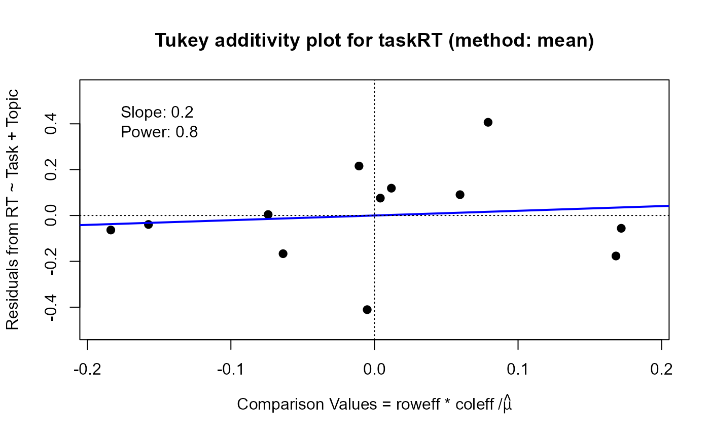

Plots either the fitted values and residuals under additivity or a diagnostic plot for removable non-additivity by a power transformation
Usage
# S3 method for class 'twoway'
plot(x, which = c("fit", "diagnose"), ..., na.rm = any(is.na(x$residuals)))
# S3 method for class 'twoway.fit'
plot(
x,
main = paste0("Tukey two-way fit plot for ", x$name, " (method: ", x$method, ")"),
xlab = expression(hat(mu) * " + Column Effect - Row Effect"),
ylab = expression("Fit = " * hat(mu) * " + Column Effect + Row Effect"),
rfactor = 1,
rcolor = c("blue", "red"),
lwd = 3,
ylim = NULL,
...,
na.rm = any(is.na(x$residuals))
)
# S3 method for class 'twoway.diagnose'
plot(x, annotate = TRUE, jitter = FALSE, smooth = FALSE, pch = 16, ...)Arguments
- x
a
class("twoway")object- which
one of
"fit"or"diagnose"- ...
other arguments, passed to
plot- na.rm
logical. Should missing values be removed?
- main
plot title
- xlab
X axis label
- ylab
Y axis label
- rfactor
draw lines for
abs(residuals) > rfactor*sqrt(MSPE)- rcolor
a vector of length 2 giving the color of lines for positive and negative residuals
- lwd
line width for residual lines in the fit plot
- ylim
Y axis limits
- annotate
A logical value; if
TRUE, the slope and power are displayed in the diagnostic plot- jitter
A logical value; if
TRUE, the comparison values in the plot are jittered to avoid overplotting- smooth
A logical value; if
TRUE, a smoothedloesscurve is added to the plot- pch
Plot character for point symbols in the diagnostic plot
Details
For the which="fit" plot, the basic result comes from a plot of the row effects against the column fitted
values, which appears as a rectangular grid in these coordinates. Rotating this 45 degrees counterclockwise give a plot
in which the vertical coordinate is the fitted value for the two-way table, and the horizontal coordinate is the column fit
minus the row effect. The spacing of the grid lines for the rows and columns of the table show the relative magnitudes of the
row/column means or medians.
For the which="diagnose" plot, the interaction residuals from an additive model, \(y_{ij} = \mu + \alpha_i + \beta_j\),
are plotted against the estimated components \(\alpha_i \beta_j / \mu\). If this plot shows a substantially non-zero
slope, \(b\), this analysis suggests that a power transformation, \( y \rightarrow y^(1-b)\) might reduce the
apparent interaction effects.
For both plots, if you want to directly compare the result of method="mean" and method="median", it is
essential to set the same xlim and ylim axes in the call.
Examples
data(taskRT)
tw <- twoway(taskRT)
tw
#>
#> Mean decomposition (Dataset: "taskRT"; Response: RT)
#> Residuals bordered by row effects, column effects, and overall
#>
#> Topic
#> Task topic1 topic2 topic3 topic4 roweff
#> + --------- --------- --------- --------- + ---------
#> Easy | -0.055833 0.090833 0.004167 -0.039167 : -0.864167
#> Medium | 0.119167 0.075833 -0.410833 0.215833 : -0.059167
#> Hard | -0.063333 -0.166667 0.406667 -0.176667 : 0.923333
#> + ......... ......... ......... ......... + .........
#> coleff | -0.831667 -0.288333 0.358333 0.761667 : 4.181667
#>
twmed <- twoway(taskRT, method="median")
twmed
#>
#> Median polish decomposition (Dataset: "taskRT"; Response: RT)
#> Residuals bordered by row effects, column effects, and overall
#>
#> Topic
#> Task topic1 topic2 topic3 topic4 roweff
#> + ------- ------- ------- ------- + -------
#> Easy | -0.0850 0.1050 0.0000 0.0000 : -0.8950
#> Medium | 0.0000 0.0000 -0.5050 0.1650 : 0.0000
#> Hard | 0.0225 -0.0375 0.5175 -0.0225 : 0.7775
#> + ....... ....... ....... ....... + .......
#> coleff | -0.8325 -0.3325 0.3325 0.6925 : 4.2425
#>
plot(tw, xlim=c(2,7), ylim=c(2,7)) ## use the same xlim and ylim, for comparison
plot(twmed, xlim=c(2,7), ylim=c(2,7))
plot(tw, which="diagnose", xlim=c(-.19, .19), ylim=c(-.5, .55))

#> Slope of Residual on comparison value: 0.2
#> Suggested power transformation: 0.8
#> Ladder of powers transformation: no transformation
plot(twmed, which="diagnose", xlim=c(-.19, .19), ylim=c(-.5, .55))
#> Slope of Residual on comparison value: 0.2
#> Suggested power transformation: 0.8
#> Ladder of powers transformation: no transformation
data(insectCounts)
twi <- twoway(insectCounts)
twimed <- twoway(insectCounts, method="median")
plot(twi, xlim=c(-250, 700), ylim=c(-180, 900))
plot(twimed, xlim=c(-250, 700), ylim=c(-180, 900))
plot(twi, which="diagnose", xlim=c(-160, 170), ylim=c(-200, 400)) ## power = .1
#> Slope of Residual on comparison value: 0.9
#> Suggested power transformation: 0.1
#> Ladder of powers transformation: log
plot(twimed, which="diagnose", xlim=c(-160, 170), ylim=c(-200, 400)) ## power = .3
#> Slope of Residual on comparison value: 0.7
#> Suggested power transformation: 0.3
#> Ladder of powers transformation: cube root